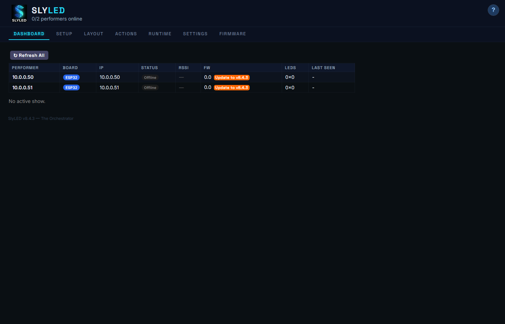
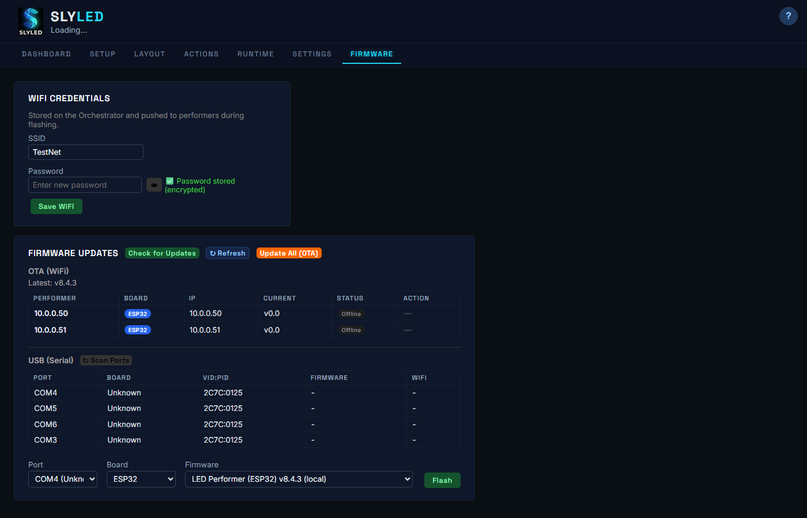
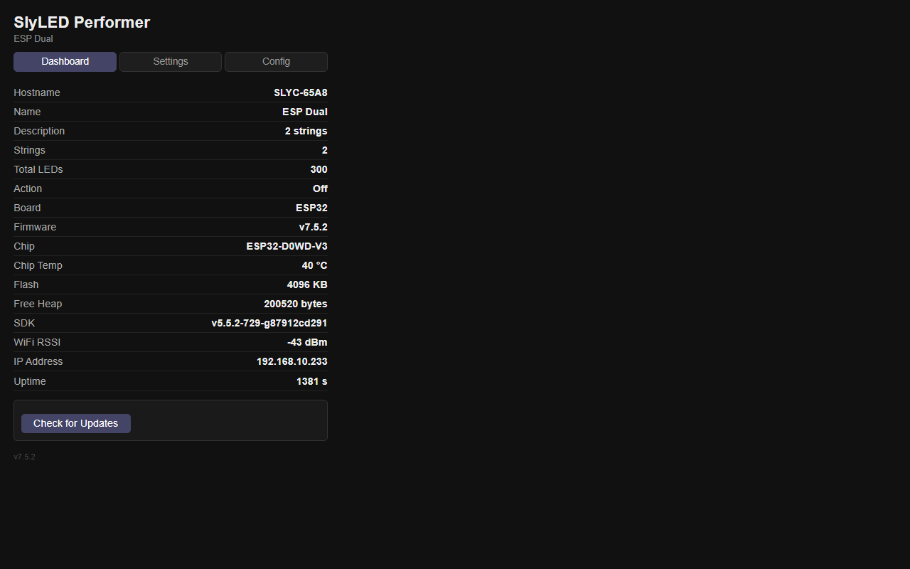
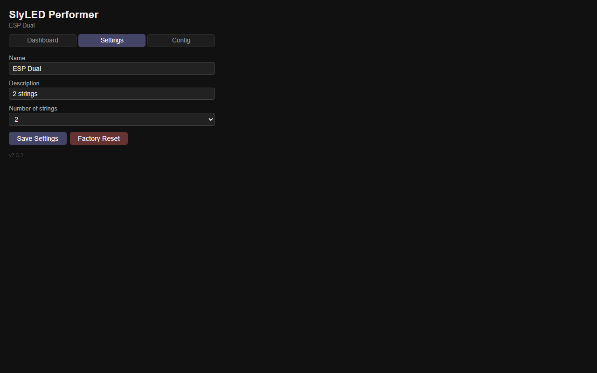
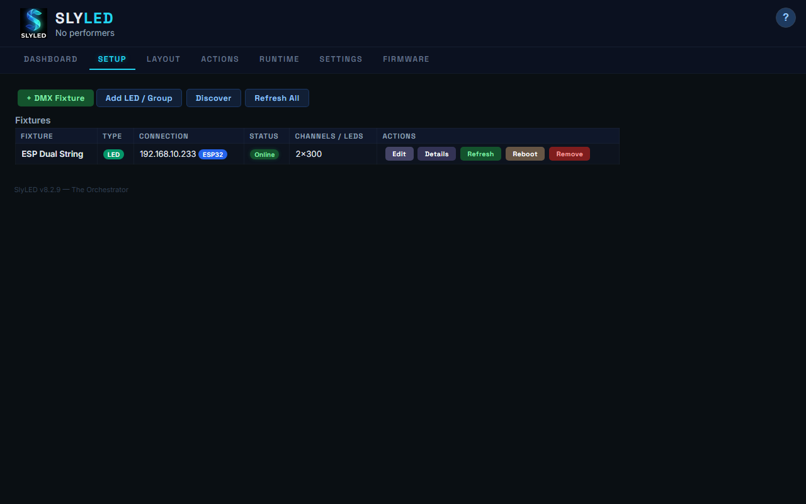
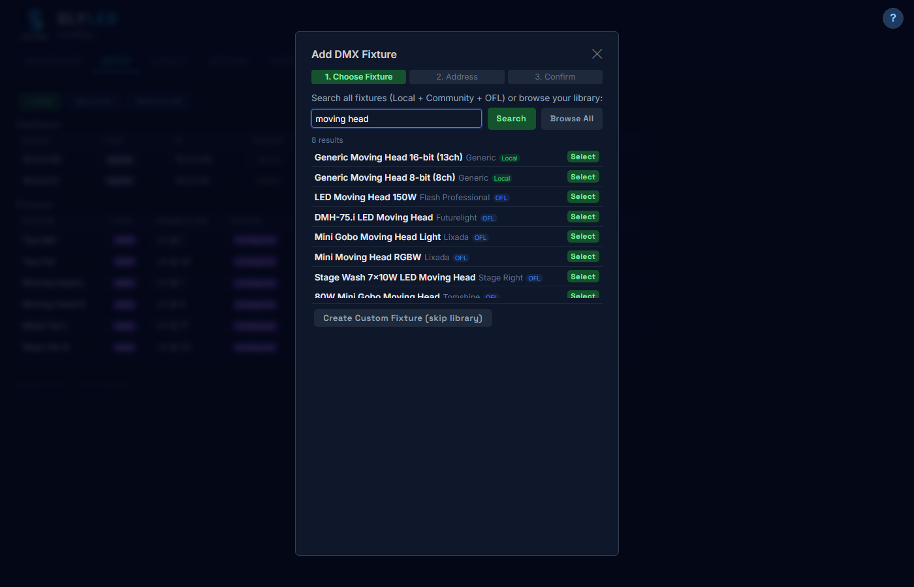
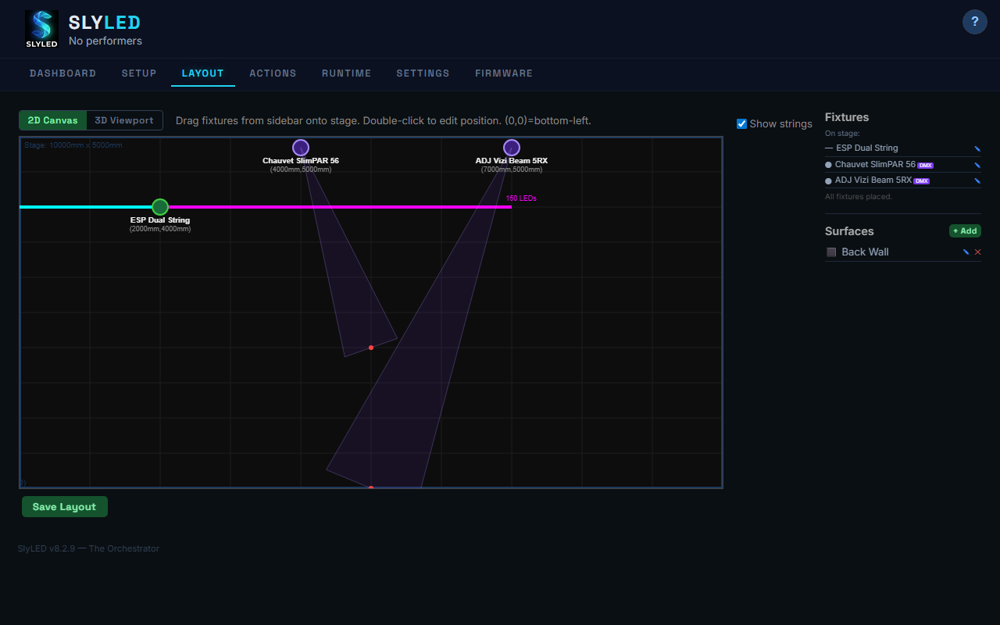
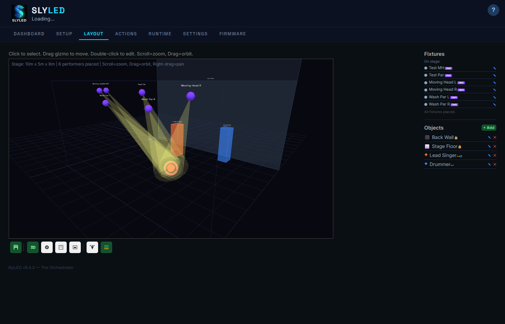
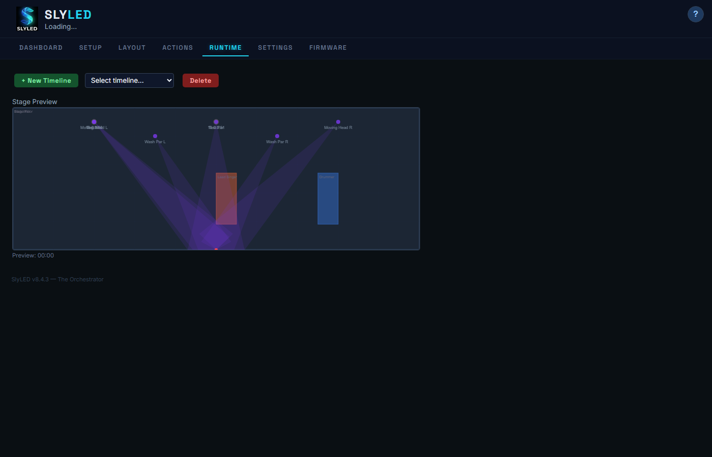
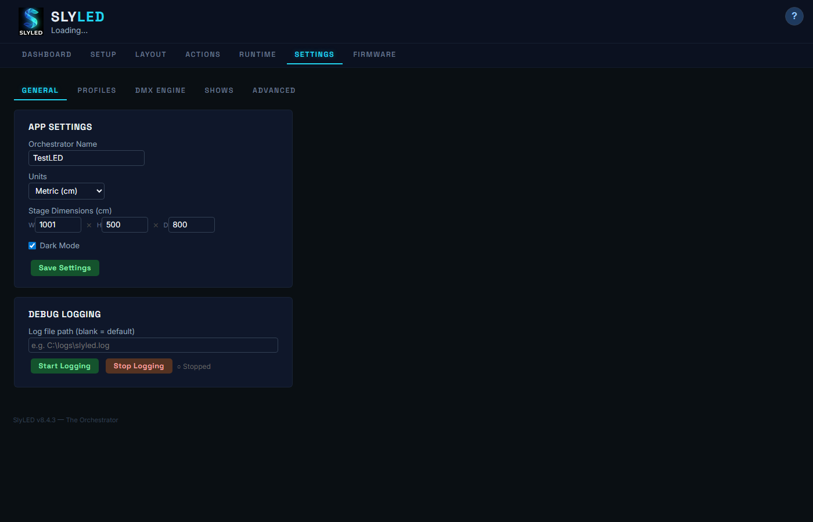

Run SlyLED.exe or SlyLED-Setup.exe. The dashboard opens empty — ready for you to connect hardware.

Go to the Firmware tab. Connect your ESP32 via USB, select the COM port, enter WiFi credentials, and click Flash.

Once flashed, the ESP32 serves a config page at its IP address. The Dashboard tab shows the device hostname, firmware version, and active action status.

http://192.168.x.x/config — the IP is shown on the SlyLED Setup tab after discovery.On the Settings tab, give your performer a friendly name and description. Set the number of LED strings connected.

On the Config tab, set each string's LED count, physical length (mm), strip direction, and GPIO data pin. Click Test to verify each string lights up.

Back on the desktop, go to Setup and click Discover. Your configured ESP32 appears with its name and LED count. Click Add to register it.

Click + DMX Fixture to launch the wizard. Search the Open Fixture Library for your model (700+ fixtures), set universe and address, confirm.

Switch to Layout. Drag fixtures onto the stage. LED strings show as colored lines, DMX fixtures show beam cones toward their aim points. Surfaces render behind.

Toggle to 3D for an interactive Three.js scene. Orbit with mouse drag, zoom with scroll. Beam cones render as 3D geometry. Drag aim spheres to redirect beams.

Build your effects library with 14 types: Rainbow, Chase, Fire, Comet, Twinkle, and more. Create spatial effects that sweep across the 3D stage.

Load a preset show or build a timeline. Click Bake → Sync → Start. The emulator previews LED colors and DMX beam positions in real-time.

Configure Art-Net routing, manage profiles, share fixtures with the community, control groups, and monitor DMX channels live.
